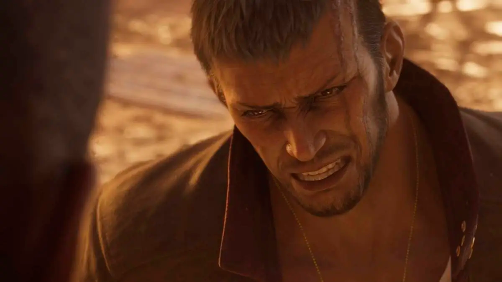
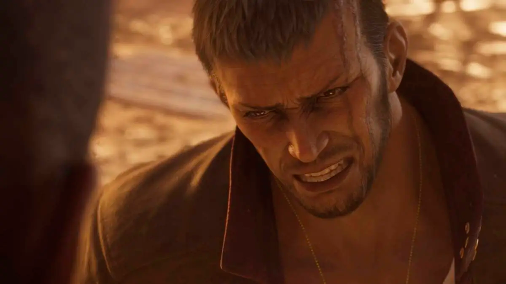

The Grasslands
Acompaña a Cloud y compañía en la región de The Grasslands, donde la aventura de Final Fantasy VII Remake concluyó. En esta región puedes llegar a explorar el pueblo vecino a Midgar, siendo Kalm donde Cloud contará su pasado en Nibelheim, o bien puedes ayudar a la granja de chocobos a llenar los establos o emprender tu viaje a la mina de mithrilio donde puede que haya algún monstruo en sus aguas.
Junon
La región de Junon se encuentran la prueba de la milicia más poderosa de Shinra, donde el
heredero Rufus Shinra a decidido demostrar aún más su nuevo imperio lo que llevará a Cloud y
compañía a necesitar escabullirse dentro de las tropas, y conocer sus grandes secretos.
O bien explorar las regiones aledañas como los restos de un antiguo barco pirata.
Nibel
La región de Nibel, puedes volver al pasado de Cloud y Tifa en su antiguo publo natal de Nibelheim. Hogar de la Mansión Shinra y donde el misterioso Vincent Valentine descansa en la prfundidades de la mansión, o bien puedes explorar las zonas cercanas donde yace la cueva de Lucrecia.
Corel
La región de Corel, cerca de las ciudades de Rocket Town y Corel, pueblo natal de Barret y Cid, amnbos con un pasado que se remonta a muchos años atrás, sitio donde los mercenarios se llegan a reunir, pero hasta en los sitio más horribles Siempre hay un oasis, en este caso el Gold Saucer donde una cita le espera a Cloud en la noche que pasen ahí.
 

Gongaga
La región de Gongaga es el sitio natal de Zack Fair, un sitio donde Aerith le desbloquará muchos recuerdos, pero en está ocasión puede que las cosas cambien en la visita del grupo en este momento hasta el punto de conocer a viejo conocidos o bien explorar el antiguo reactor destruido de Shinra.
Cañon Cosmo
O por último puedes viajar al Cañon Cosmo, donde yace el hogar de Red XIII, donde las personas pueden volver a entrar en contacto con el planeta, y conocer el pasado de Red XIII junto a su verdadero nombre.